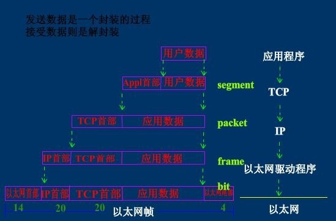

http://www.cnblogs.com/linhaifeng/articles/5937962.html#_label4
一.操作系统基础
操作系统:(Operating System，简称OS)是管理和控制计算机硬件与软件资源的计算机程序，是直接运行在“裸机”上的最基本的系统软件，任何其他软件都必须在操作系统的支持下才能运行。
注：计算机(硬件)－>os－>应用软件
二.网络通信原理
2.1 互联网的本质就是一系列的网络协议
一台硬设有了操作系统，然后装上软件你就可以正常使用了，然而你也只能自己使用
像这样，每个人都拥有一台自己的机器，然而彼此孤立
如何能大家一起玩耍

然而internet为何物？
其实两台计算机之间通信与两个人打电话之间通信的原理是一样的（中国有很多地区，不同的地区有不同的方言，为了全中国人都可以听懂，大家统一讲普通话）
普通话属于中国国内人与人之间通信的标准，那如果是两个国家的人交流呢？
问题是，你不可能要求一个人／计算机掌握全世界的语言／标准，于是有了世界统一的通信标准：英语
结论：英语成为世界上所有人通信的统一标准，如果把计算机看成分布于世界各地的人，那么连接两台计算机之间的internet实际上就是
一系列统一的标准，这些标准称之为互联网协议，互联网的本质就是一系列的协议，总称为‘互联网协议’（Internet Protocol Suite).
互联网协议的功能：定义计算机如何接入internet，以及接入internet的计算机通信的标准。
2.2 osi七层协议
互联网协议按照功能不同分为osi七层或tcp/ip五层或tcp/ip四层

每层运行常见物理设备

2.3 tcp/ip五层模型讲解
我们将应用层，表示层，会话层并作应用层，从tcp／ip五层协议的角度来阐述每层的由来与功能，搞清楚了每层的主要协议
就理解了整个互联网通信的原理。
首先，用户感知到的只是最上面一层应用层，自上而下每层都依赖于下一层，所以我们从最下一层开始切入，比较好理解
每层都运行特定的协议，越往上越靠近用户，越往下越靠近硬件
2.3.1 物理层
物理层由来：上面提到，孤立的计算机之间要想一起玩，就必须接入internet，言外之意就是计算机之间必须完成组网

物理层功能：主要是基于电器特性发送高低电压(电信号)，高电压对应数字1，低电压对应数字0
2.3.2 数据链路层
数据链路层由来：单纯的电信号0和1没有任何意义，必须规定电信号多少位一组，每组什么意思
数据链路层的功能：定义了电信号的分组方式
以太网协议：
早期的时候各个公司都有自己的分组方式，后来形成了统一的标准，即以太网协议ethernet
ethernet规定
- 一组电信号构成一个数据包，叫做‘帧’
- 每一数据帧分成：报头head和数据data两部分
| head | data |
|---|---|
head包含：(固定18个字节)
- 发送者／源地址，6个字节
- 接收者／目标地址，6个字节
- 数据类型，6个字节
data包含：(最短46字节，最长1500字节)
- 数据包的具体内容
head长度＋data长度＝最短64字节，最长1518字节，超过最大限制就分片发送
mac地址：
head中包含的源和目标地址由来：ethernet规定接入internet的设备都必须具备网卡，发送端和接收端的地址便是指网卡的地址，即mac地址
mac地址：每块网卡出厂时都被烧制上一个世界唯一的mac地址，长度为48位2进制，通常由12位16进制数表示（前六位是厂商编号，后六位是流水线号）
广播：
有了mac地址，同一网络内的两台主机就可以通信了（一台主机通过arp协议获取另外一台主机的mac地址）
ethernet采用最原始的方式，广播的方式进行通信，即计算机通信基本靠吼
2.3.3 网络层
网络层由来：有了ethernet、mac地址、广播的发送方式，世界上的计算机就可以彼此通信了，问题是世界范围的互联网是由
一个个彼此隔离的小的局域网组成的，那么如果所有的通信都采用以太网的广播方式，那么一台机器发送的包全世界都会收到，
这就不仅仅是效率低的问题了，这会是一种灾难

上图结论：必须找出一种方法来区分哪些计算机属于同一广播域，哪些不是，如果是就采用广播的方式发送，如果不是，
就采用路由的方式（向不同广播域／子网分发数据包），mac地址是无法区分的，它只跟厂商有关
网络层功能：引入一套新的地址用来区分不同的广播域／子网，这套地址即网络地址
IP协议：
- 规定网络地址的协议叫ip协议，它定义的地址称之为ip地址，广泛采用的v4版本即ipv4，它规定网络地址由32位2进制表示
- 范围0.0.0.0-255.255.255.255
- 一个ip地址通常写成四段十进制数，例：172.16.10.1
ip地址分成两部分
- 网络部分：标识子网
- 主机部分：标识主机
注意：单纯的ip地址段只是标识了ip地址的种类，从网络部分或主机部分都无法辨识一个ip所处的子网
例：172.16.10.1与172.16.10.2并不能确定二者处于同一子网
子网掩码
所谓”子网掩码”，就是表示子网络特征的一个参数。它在形式上等同于IP地址，也是一个32位二进制数字，它的网络部分全部为1，主机部分全部为0。比如，IP地址172.16.10.1，如果已知网络部分是前24位，主机部分是后8位，那么子网络掩码就是11111111.11111111.11111111.00000000，写成十进制就是255.255.255.0。
知道”子网掩码”，我们就能判断，任意两个IP地址是否处在同一个子网络。方法是将两个IP地址与子网掩码分别进行AND运算（两个数位都为1，运算结果为1，否则为0），然后比较结果是否相同，如果是的话，就表明它们在同一个子网络中，否则就不是。
比如，已知IP地址172.16.10.1和172.16.10.2的子网掩码都是255.255.255.0，请问它们是否在同一个子网络？两者与子网掩码分别进行AND运算，
172.16.10.1：10101100.00010000.00001010.000000001
255255.255.255.0:11111111.11111111.11111111.00000000
AND运算得网络地址结果：10101100.00010000.00001010.000000001->172.16.10.0
172.16.10.2：10101100.00010000.00001010.000000010
255255.255.255.0:11111111.11111111.11111111.00000000
AND运算得网络地址结果：10101100.00010000.00001010.000000001->172.16.10.0
结果都是172.16.10.0，因此它们在同一个子网络。
总结一下，IP协议的作用主要有两个，一个是为每一台计算机分配IP地址，另一个是确定哪些地址在同一个子网络。
ip数据包
ip数据包也分为head和data部分，无须为ip包定义单独的栏位，直接放入以太网包的data部分
head：长度为20到60字节
data：最长为65,515字节。
而以太网数据包的”数据”部分，最长只有1500字节。因此，如果IP数据包超过了1500字节，它就需要分割成几个以太网数据包，分开发送了。
| 以太网头 | ip 头 | ip数据 |
|---|---|---|
ARP协议
arp协议由来：计算机通信基本靠吼，即广播的方式，所有上层的包到最后都要封装上以太网头，然后通过以太网协议发送，在谈及以太网协议时候，我门了解到
通信是基于mac的广播方式实现，计算机在发包时，获取自身的mac是容易的，如何获取目标主机的mac，就需要通过arp协议
arp协议功能：广播的方式发送数据包，获取目标主机的mac地址
协议工作方式：每台主机ip都是已知的
例如：主机172.16.10.10/24访问172.16.10.11/24
一：首先通过ip地址和子网掩码区分出自己所处的子网
| 场景 | 数据包地址 |
|---|---|
| 同一子网 | 目标主机mac，目标主机ip |
| 不同子网 | 网关mac，目标主机ip |
二：分析172.16.10.10/24与172.16.10.11/24处于同一网络(如果不是同一网络，那么下表中目标ip为172.16.10.1,通过arp获取的是网关的mac)
| 源mac | 目标mac | 源ip | 目标ip | 数据部分 | |
|---|---|---|---|---|---|
| 发送端主机 | 发送端mac | FF:FF:FF:FF:FF:FF | 172.16.10.10/24 | 172.16.10.11/24 | 数据 |
三：这个包会以广播的方式在发送端所处的自网内传输，所有主机接收后拆开包，发现目标ip为自己的，就响应，返回自己的mac
2.3.4 传输层
传输层的由来：网络层的ip帮我们区分子网，以太网层的mac帮我们找到主机，然后大家使用的都是应用程序，你的电脑上可能同时开启qq，暴风影音，等多个应用程序，
那么我们通过ip和mac找到了一台特定的主机，如何标识这台主机上的应用程序，答案就是端口，端口即应用程序与网卡关联的编号。
传输层功能：建立端口到端口的通信
补充：端口范围0-65535，0-1023为系统占用端口
tcp协议：
可靠传输，TCP数据包没有长度限制，理论上可以无限长，但是为了保证网络的效率，通常TCP数据包的长度不会超过IP数据包的长度，以确保单个TCP数据包不必再分割。
| 以太网头 | ip 头 | tcp头 | 数据 |
|---|---|---|---|
udp协议：
不可靠传输，”报头”部分一共只有8个字节，总长度不超过65,535字节，正好放进一个IP数据包。
| 以太网头 | ip头 | udp头 | 数据 |
|---|---|---|---|
tcp报文

tcp三次握手和四次挥手

发送端接受到接收端的ack响应后才会清空发送端内核态的缓存。
TCP协议与UDP协议的区别
1 | 首先咱们弄清楚，TCP协议和UCP协议与TCP/IP协议的联系，很多人犯糊涂了， |
TCP/IP协议是一个协议簇。里面包括很多协议的，UDP只是其中的一个， 之所以命名为TCP/IP协议，因为TCP、IP协议是两个很重要的协议，就用他两命名了。
TCP/IP协议集包括应用层,传输层，网络层，网络访问层。
其中应用层包括:
1、超文本传输协议（HTTP）:万维网的基本协议；
2、文件传输（TFTP简单文件传输协议）；
3、远程登录（Telnet），提供远程访问其它主机功能, 它允许用户登录internet主机，并在这台主机上执行命令；
4、网络管理（SNMP简单网络管理协议），该协议提供了监控网络设备的方法， 以及配置管理,统计信息收集,性能管理及安全管理等；
5、域名系统（DNS），该系统用于在internet中将域名及其公共广播的网络节点转换成IP地址。
其次网络层包括:
1、Internet协议（IP）；
2、Internet控制信息协议（ICMP）；
3、地址解析协议（ARP）；
4、反向地址解析协议（RARP）。
最后说网络访问层:
网络访问层又称作主机到网络层（host-to-network），网络访问层的功能包括IP地址与物理地址硬件的映射， 以及将IP封装成帧.基于不同硬件类型的网络接口，网络访问层定义了和物理介质的连接. 当然我这里说得不够完善，TCP/IP协议本来就是一门学问，每一个分支都是一个很复杂的流程， 但我相信每位学习软件开发的同学都有必要去仔细了解一番。
下面着重讲解一下TCP协议和UDP协议的区别
TCP（Transmission Control Protocol，传输控制协议）是面向连接的协议，也就是说，在收发数据前，必须和对方建立可靠的连接。 一个TCP连接必须要经过三次“对话”才能建立起来，其中的过程非常复杂， 只简单的描述下这三次对话的简单过程：
1）主机A向主机B发出连接请求数据包：“我想给你发数据，可以吗？”，这是第一次对话；
2）主机B向主机A发送同意连接和要求同步 （同步就是两台主机一个在发送，一个在接收，协调工作）的数据包 ：“可以，你什么时候发？”，这是第二次对话；
3）主机A再发出一个数据包确认主机B的要求同步：“我现在就发，你接着吧！”， 这是第三次对话。
三次“对话”的目的是使数据包的发送和接收同步， 经过三次“对话”之后，主机A才向主机B正式发送数据。
TCP三次握手过程
第一次握手：主机A通过向主机B 发送一个含有同步序列号的标志位的数据段给主机B，向主机B 请求建立连接，通过这个数据段， 主机A告诉主机B 两件事：我想要和你通信；你可以用哪个序列号作为起始数据段来回应我。
第二次握手：主机B 收到主机A的请求后，用一个带有确认应答（ACK）和同步序列号（SYN）标志位的数据段响应主机A，也告诉主机A两件事：我已经收到你的请求了，你可以传输数据了；你要用那个序列号作为起始数据段来回应我
第三次握手：主机A收到这个数据段后，再发送一个确认应答，确认已收到主机B 的数据段：”我已收到回复，我现在要开始传输实际数据了，这样3次握手就完成了，主机A和主机B 就可以传输数据了。
3次握手的特点
没有应用层的数据 ,SYN这个标志位只有在TCP建立连接时才会被置1 ,握手完成后SYN标志位被置0。
、
TCP建立连接要进行3次握手，而断开连接要进行4次
第一次： 当主机A完成数据传输后,将控制位FIN置1，提出停止TCP连接的请求 ；
第二次： 主机B收到FIN后对其作出响应，确认这一方向上的TCP连接将关闭,将ACK置1；
第三次： 由B 端再提出反方向的关闭请求,将FIN置1 ；
第四次： 主机A对主机B的请求进行确认，将ACK置1，双方向的关闭结束.。
由TCP的三次握手和四次断开可以看出，TCP使用面向连接的通信方式， 大大提高了数据通信的可靠性，使发送数据端和接收端在数据正式传输前就有了交互， 为数据正式传输打下了可靠的基础。
名词解释
1、ACK 是TCP报头的控制位之一，对数据进行确认。确认由目的端发出， 用它来告诉发送端这个序列号之前的数据段都收到了。 比如确认号为X，则表示前X-1个数据段都收到了，只有当ACK=1时,确认号才有效，当ACK=0时，确认号无效，这时会要求重传数据，保证数据的完整性。
2、SYN 同步序列号，TCP建立连接时将这个位置1。
3、FIN 发送端完成发送任务位，当TCP完成数据传输需要断开时,，提出断开连接的一方将这位置1。
TCP的包头结构：
源端口 16位；
目标端口 16位；
序列号 32位；
回应序号 32位；
TCP头长度 4位；
reserved 6位；
控制代码 6位；
窗口大小 16位；
偏移量 16位；
校验和 16位；
选项 32位(可选)；
这样我们得出了TCP包头的最小长度，为20字节。
UDP（User Data Protocol，用户数据报协议）
1、UDP是一个非连接的协议，传输数据之前源端和终端不建立连接， 当它想传送时就简单地去抓取来自应用程序的数据，并尽可能快地把它扔到网络上。 在发送端，UDP传送数据的速度仅仅是受应用程序生成数据的速度、 计算机的能力和传输带宽的限制； 在接收端，UDP把每个消息段放在队列中，应用程序每次从队列中读一个消息段。
2、 由于传输数据不建立连接，因此也就不需要维护连接状态，包括收发状态等， 因此一台服务机可同时向多个客户机传输相同的消息。
3、UDP信息包的标题很短，只有8个字节，相对于TCP的20个字节信息包的额外开销很小。
4、吞吐量不受拥挤控制算法的调节，只受应用软件生成数据的速率、传输带宽、 源端和终端主机性能的限制。
5、UDP使用尽最大努力交付，即不保证可靠交付， 因此主机不需要维持复杂的链接状态表（这里面有许多参数）。
6、UDP是面向报文的。发送方的UDP对应用程序交下来的报文， 在添加首部后就向下交付给IP层。既不拆分，也不合并，而是保留这些报文的边界， 因此，应用程序需要选择合适的报文大小。
我们经常使用“ping”命令来测试两台主机之间TCP/IP通信是否正常， 其实“ping”命令的原理就是向对方主机发送UDP数据包，然后对方主机确认收到数据包， 如果数据包是否到达的消息及时反馈回来，那么网络就是通的。
ping命令是用来探测主机到主机之间是否可通信，如果不能ping到某台主机，表明不能和这台主机建立连接。ping命令是使用 IP 和网络控制信息协议 (ICMP)，因而没有涉及到任何传输协议(UDP/TCP) 和应用程序。它发送icmp回送请求消息给目的主机。
ICMP协议规定：目的主机必须返回ICMP回送应答消息给源主机。如果源主机在一定时间内收到应答，则认为主机可达。
UDP的包头结构：
源端口 16位
目的端口 16位
长度 16位
校验和 16位
小结TCP与UDP的区别：
1、基于连接与无连接；
2、对系统资源的要求（TCP较多，UDP少）；
3、UDP程序结构较简单；
4、流模式与数据报模式 ；
5、TCP保证数据正确性，UDP可能丢包；
6、TCP保证数据顺序，UDP不保证。
2.3.5 应用层
应用层由来：用户使用的都是应用程序，均工作于应用层，互联网是开发的，大家都可以开发自己的应用程序，数据多种多样，必须规定好数据的组织形式
应用层功能：规定应用程序的数据格式。
例：TCP协议可以为各种各样的程序传递数据，比如Email、WWW、FTP等等。那么，必须有不同协议规定电子邮件、网页、FTP数据的格式，这些应用程序协议就构成了”应用层”。

2.3.6 socket
我们知道两个进程如果需要进行通讯最基本的一个前提能能够唯一的标示一个进程，在本地进程通讯中我们可以使用PID来唯一标示一个进程，但PID只在本地唯一，网络中的两个进程PID冲突几率很大，这时候我们需要另辟它径了，我们知道IP层的ip地址可以唯一标示主机，而TCP层协议和端口号可以唯一标示主机的一个进程，这样我们可以利用ip地址＋协议＋端口号唯一标示网络中的一个进程。
能够唯一标示网络中的进程后，它们就可以利用socket进行通信了，什么是socket呢？我们经常把socket翻译为套接字，socket是在应用层和传输层之间的一个抽象层，它把TCP/IP层复杂的操作抽象为几个简单的接口供应用层调用已实现进程在网络中通信。

socket起源于UNIX，在Unix一切皆文件哲学的思想下，socket是一种”打开—读/写—关闭”模式的实现，服务器和客户端各自维护一个”文件”，在建立连接打开后，可以向自己文件写入内容供对方读取或者读取对方内容，通讯结束时关闭文件。
三.网络通信实现
想实现网络通信，每台主机需具备四要素
- 本机的IP地址
- 子网掩码
- 网关的IP地址
- DNS的IP地址
获取这四要素分两种方式
1.静态获取
即手动配置
2.动态获取
通过dhcp获取
| 以太网头 | ip头 | udp头 | dhcp数据包 |
|---|---|---|---|
（1）最前面的”以太网标头”，设置发出方（本机）的MAC地址和接收方（DHCP服务器）的MAC地址。前者就是本机网卡的MAC地址，后者这时不知道，就填入一个广播地址：FF-FF-FF-FF-FF-FF。
（2）后面的”IP标头”，设置发出方的IP地址和接收方的IP地址。这时，对于这两者，本机都不知道。于是，发出方的IP地址就设为0.0.0.0，接收方的IP地址设为255.255.255.255。
（3）最后的”UDP标头”，设置发出方的端口和接收方的端口。这一部分是DHCP协议规定好的，发出方是68端口，接收方是67端口。
这个数据包构造完成后，就可以发出了。以太网是广播发送，同一个子网络的每台计算机都收到了这个包。因为接收方的MAC地址是FF-FF-FF-FF-FF-FF，看不出是发给谁的，所以每台收到这个包的计算机，还必须分析这个包的IP地址，才能确定是不是发给自己的。当看到发出方IP地址是0.0.0.0，接收方是255.255.255.255，于是DHCP服务器知道”这个包是发给我的”，而其他计算机就可以丢弃这个包。
接下来，DHCP服务器读出这个包的数据内容，分配好IP地址，发送回去一个”DHCP响应”数据包。这个响应包的结构也是类似的，以太网标头的MAC地址是双方的网卡地址，IP标头的IP地址是DHCP服务器的IP地址（发出方）和255.255.255.255（接收方），UDP标头的端口是67（发出方）和68（接收方），分配给请求端的IP地址和本网络的具体参数则包含在Data部分。
新加入的计算机收到这个响应包，于是就知道了自己的IP地址、子网掩码、网关地址、DNS服务器等等参数
四.网络通信流程
1.本机获取
- 本机的IP地址：192.168.1.100
- 子网掩码：255.255.255.0
- 网关的IP地址：192.168.1.1
- DNS的IP地址：8.8.8.8
2.打开浏览器，想要访问Google，在地址栏输入了网址：www.google.com。
3.dns协议(基于udp协议)
13台根dns：
A.root-servers.net198.41.0.4美国
B.root-servers.net192.228.79.201美国（另支持IPv6）
C.root-servers.net192.33.4.12法国
D.root-servers.net128.8.10.90美国
E.root-servers.net192.203.230.10美国
F.root-servers.net192.5.5.241美国（另支持IPv6）
G.root-servers.net192.112.36.4美国
H.root-servers.net128.63.2.53美国（另支持IPv6）
I.root-servers.net192.36.148.17瑞典
J.root-servers.net192.58.128.30美国
K.root-servers.net193.0.14.129英国（另支持IPv6）
L.root-servers.net198.32.64.12美国
M.root-servers.net202.12.27.33日本（另支持IPv6）
域名定义：http://jingyan.baidu.com/article/1974b289a649daf4b1f774cb.html
顶级域名：以.com,.net,.org,.cn等等属于国际顶级域名，根据目前的国际互联网域名体系，国际顶级域名分为两类：类别顶级域名(gTLD)和地理顶级域名(ccTLD)两种。类别顶级域名是 以”COM”、”NET”、”ORG”、”BIZ”、”INFO”等结尾的域名，均由国外公司负责管理。地理顶级域名是以国家或地区代码为结尾的域名，如”CN”代表中国，”UK”代表英国。地理顶级域名一般由各个国家或地区负责管理。
二级域名：二级域名是以顶级域名为基础的地理域名，比喻中国的二级域有，.com.cn,.net.cn,.org.cn,.gd.cn等.子域名是其父域名的子域名，比喻父域名是abc.com,子域名就是www.abc.com或者*.abc.com.
一般来说，二级域名是域名的一条记录，比如alidiedie.com是一个域名，www.alidiedie.com是其中比较常用的记录，一般默认是用这个，但是类似*.alidiedie.com的域名全部称作是alidiedie.com的二级
4.HTTP部分的内容，类似于下面这样：
GET / HTTP/1.1
Host: www.google.com
Connection: keep-alive
User-Agent: Mozilla/5.0 (Windows NT 6.1) ……
Accept: text/html,application/xhtml+xml,application/xml;q=0.9,/;q=0.8
Accept-Encoding: gzip,deflate,sdch
Accept-Language: zh-CN,zh;q=0.8
Accept-Charset: GBK,utf-8;q=0.7,*;q=0.3
Cookie: … …
我们假定这个部分的长度为4960字节，它会被嵌在TCP数据包之中。
5 TCP协议
TCP数据包需要设置端口，接收方（Google）的HTTP端口默认是80，发送方（本机）的端口是一个随机生成的1024-65535之间的整数，假定为51775。
TCP数据包的标头长度为20字节，加上嵌入HTTP的数据包，总长度变为4980字节。
6 IP协议
然后，TCP数据包再嵌入IP数据包。IP数据包需要设置双方的IP地址，这是已知的，发送方是192.168.1.100（本机），接收方是172.194.72.105（Google）。
IP数据包的标头长度为20字节，加上嵌入的TCP数据包，总长度变为5000字节。
7 以太网协议
最后，IP数据包嵌入以太网数据包。以太网数据包需要设置双方的MAC地址，发送方为本机的网卡MAC地址，接收方为网关192.168.1.1的MAC地址（通过ARP协议得到）。
以太网数据包的数据部分，最大长度为1500字节，而现在的IP数据包长度为5000字节。因此，IP数据包必须分割成四个包。因为每个包都有自己的IP标头（20字节），所以四个包的IP数据包的长度分别为1500、1500、1500、560。
8 服务器端响应
经过多个网关的转发，Google的服务器172.194.72.105，收到了这四个以太网数据包。
根据IP标头的序号，Google将四个包拼起来，取出完整的TCP数据包，然后读出里面的”HTTP请求”，接着做出”HTTP响应”，再用TCP协议发回来。
本机收到HTTP响应以后，就可以将网页显示出来，完成一次网络通信。